vkki 8위호텔 리터럴 EP.5 — 쓰레기 버려 주세요

Hotel Literal — EP.5 : Throw Away the Trash.
조회수 1,340좋아요 24댓글 1업로드 2026-09-20길이 21.13초608x1080 · 24fps · 9:16 · -16.2 LUFS (LRA 6.1, 마지막 1.59초 디지털 무음 엔드카드)
'말한 그대로 이뤄지는' 호텔에서 동생이 누나에게 배운 틀린 영어 'Throw the trash!'를 외치자 휴지통 속 종이가 방 전체로 '던져지고', 메이드가 정답 'Throw away the trash'를 가르쳐 따라 하자 휴지통이 스스로 치워지는 21초 문자 그대로 코미디 + 정답 카드.
🔥 떡상 이유
- 0초 대사 시작 콜드 오픈(훅 지연 0): 첫 프레임부터 자막 'Noona —'와 음성 → 스크롤 멈춤
- 문자 그대로(literal) 개그 = 시각적 오답 채점: 'throw'가 진짜 '던지기'로 실현되는 종이 분수 → 설명 없이도 뜻 차이가 이해됨
- 시리즈 세계관 규칙(Hotel Literal): '말한 대로 된다'는 마법 규칙이 오답·정답 모두에 적용돼 원인→결과가 깔끔(EP 연속 시청 유도)
- 색 코딩 자막: 오답 동사 'Throw' 빨강, 정답 구동사 'Throw away' 노랑 → 차이 나는 단어 하나만 강조(최소 대비 학습)
- 반복 4회 + 빈칸 퀴즈 2회(능동 회상): 가르침→복창→'________ the trash' 2번 → 시청자가 속으로 말하게 됨
- 비포/애프터 매치 프레이밍: 같은 와이드(샷4 vs 11), 같은 누나 MS(샷2 vs 10에 머리 위 종이공) → 변화만 보여 웃음 증폭
- 무음 정답 엔드카드 1.6초: 블러 배경+노랑 'Throw away the trash.' → 캡처·저장 욕구 + 무음이라 루프 시 첫 대사가 또렷
hook0~3.5s: 동생이 컵을 들고 'Noona— trash... bye-bye? What do I say?' — 콩글리시로 상황+질문 즉시 제시
conflict3.5~8.0s: 누나 오답 'Throw the trash'(빨강) → 동생 복창 → 휴지통 종이공이 방 전체로 발사(문자 그대로)
payoff8.0~19.5s: 메이드 'Look, it's everywhere. Then say, Throw away the trash.' → 복창 → 빈칸 퀴즈 2회 → 휴지통이 스스로 카트 옆으로 치워짐 → 머리에 종이공 얹은 누나 '...That's what I meant' → 난장판 와이드 태블로
loop19.54~21.13s 무음 블러 엔드카드 'Say it like this / Throw away the trash.' → 무음 끝 → 루프 시 0초 'Noona —'가 바로 붙음
⏱ 편집 리듬
컷 수12평균 컷 길이1.76최단/최장0.88 / 4.17분당 컷34.1해석긴 컷 2개(질문 3.54s, 메이드 설명 4.17s)가 정보 구간, 나머지는 0.9~1.6초 리액션/반복. 오답 복창(0.92s)·펀치라인(0.88s)이 가장 짧아 코믹 타이밍 가속. J컷 2곳(7.58s, 17.02s)으로 대사가 컷보다 0.4초 먼저 들어와 흐름이 끊기지 않음
🎨 스타일 바이블
룩실사 시네마틱 AI 드라마(Higgsfield + Seedance 2.5 생성, 설명란 해시태그 근거). 파리 부티크 호텔풍 클래식 인테리어 + K-아이돌 비주얼, 크리미한 저채도 웜 그레이딩, 약한 필름 그레인. 마법 리얼리즘(사물이 말대로 움직임)조명객실: 늦은 오전 창 햇빛(웜 4500~5000K) — 러그 위 강한 사선 햇빛 슬랩과 긴 그림자, 인물은 소프트 프런트 필, 누나 샷은 시어 커튼 역광 하이키. 복도(메이드): 로우키 차가운 회색 배경 + 얼굴 웜 키라이트색#E8DCC5 크림 벽 · #A9BBA5 세이지 웨인스코트/러그 · #7E9A84 동생 셔츠 세이지 · #F3E6A6 누나 블라우스 버터옐로 · #D8321E 휴지통 레드(유일한 강한 보색 포인트) · #C79A5E 헤링본 오크 · #9EA3A6 메이드 그레이 · #C9A45A 황동 카트렌즈와이드 24mm 딥포커스(샷4/11) / MS 50mm f/2 / OTS 50mm f/1.8(전경 강한 블러) / 로우 인서트 35mm. 카메라 전부 고정세트파리풍 부티크 호텔 객실: 크림 회벽, 세이지 웨인스코트 패널, 코니스 몰딩, 헤링본 오크 마루, 빛바랜 세이지 러그, 좌측 흰 침대, 창가 크림 부클레 암체어, 시어 커튼 긴 창, 우측 안쪽 이중문 너머 어두운 복도. 소품: 빨간 페달 휴지통(구겨진 흰 종이공 가득), 황동 프레임 하우스키핑 카트(캔버스 자루+흰 수건), 흰 종이컵자막 스타일Inter Bold — CSS 30px@1080p(ASS Fontsize 36), 흰색, 외곽선 없음, 드롭섀도(우하 2px, 검정 55%). 가로 중앙, y 42~54%(대부분 얼굴 바로 아래 가슴 위 44% 부근). 오답 'Throw' 빨강 #F82000, 정답 'Throw away' 노랑 #F8F800, 빈칸은 노랑 언더스코어 '________'. 애니메이션 없이 즉시 on/off. 와이드·인서트 컷은 자막 없음. 엔드카드: 'Say it like this' 흰색 CSS 23px(ASS 28, 폭≈182px) y≈38% + 'Throw away / the trash.' 노랑 CSS 41px(ASS 50, 'Throw away' 폭≈287px) 2줄 y≈44%/50%워터마크①'AI video and voice.' — 가로 중앙 y≈79.8%(862px), Inter Medium CSS 18px(ASS 22, 폭≈182px), 흰색 약 65% 불투명, 전 구간(엔드카드 포함). ②'vkki' 핑크-퍼플 라인스톤 로고가 모든 인물 왼쪽 가슴 의상에 박혀 있음(생성 이미지 내)
동생 (투숙객) — 20대 초 한국 남성, 흑갈색 가르마 앞머리, 세이지 캠프칼라 린넨 반팔(열어 입음)+흰 티, 크림 드로스트링 바지, 라탄 벨트, 흰 스니커즈, 흰 종이컵을 두 손으로. 영어 학습자
캐릭터 시트 프롬프트Character sheet, front/3-4/side views, neutral warm-grey background, photorealistic: a slim Korean young man in his early 20s, fluffy dark-brown hair with curtain bangs, flawless fair skin, soft pink lips, sage-green short-sleeve camp-collar linen shirt worn open over a white t-shirt, cream drawstring trousers, woven belt, white sneakers, a small sparkly pink-purple rhinestone 'vkki' logo (tiny star on the i) on the left chest, holding a white paper cup with both hands at chest height. 9:16.
동물 버전 캐릭터Character sheet, front/3-4/side views, neutral warm-grey background, photorealistic anthropomorphic animal: Hamjji, an anthropomorphic golden Syrian hamster (human-scale, upright), fluffy golden-orange and cream fur, big glossy black eyes, chubby cheeks, sage-green camp-collar linen shirt open over a white tee, cream trousers, white sneakers, a small sparkly pink-purple rhinestone 'vkki' logo (tiny star on the i) on the left chest, holding a white paper cup with both paws. 9:16.
누나 — 20대 중반 한국 여성, 긴 생머리, 작은 실버 후프, 버터옐로 캠프칼라 린넨 블라우스+크림 와이드 팬츠, 암체어에 앉아 손 모음. 틀린 영어를 알려 주고 데드팬으로 체면치레 — 펀치라인
캐릭터 시트 프롬프트Character sheet, front/3-4/side views, neutral warm-grey background, photorealistic: a Korean woman in her mid 20s, long straight dark-brown hair, small silver hoop earrings, natural glowy makeup, pale-butter-yellow short-sleeve camp-collar linen blouse with a small sparkly pink-purple rhinestone 'vkki' logo (tiny star on the i) on the left chest, cream wide trousers, seated in a cream bouclé armchair, hands folded in lap. 9:16.
동물 버전 캐릭터Character sheet, front/3-4/side views, neutral warm-grey background, photorealistic anthropomorphic animal: Nabi, an anthropomorphic Ragdoll cat (human-scale, upright), long cream fur with dark-brown face points, sapphire-blue eyes, small silver hoop earrings, pale-butter-yellow camp-collar linen blouse with a small sparkly pink-purple rhinestone 'vkki' logo (tiny star on the i) on the left chest, cream wide trousers, seated in a cream bouclé armchair, paws folded. 9:16.
룸 어텐던트(메이드) — 20대 중반 흑인 여성, 하이번, 그레이 핀스트라이프 하우스키핑 원피스+흰 피터팬 칼라·커프스, vkki 로고, 황동 카트. 정답 선생님
캐릭터 시트 프롬프트Character sheet, front/3-4/side views, neutral warm-grey background, photorealistic: a young Black woman in her mid 20s, hair in a neat high bun, warm brown skin, grey pinstripe housekeeping dress with white Peter-Pan collar and white cuffs, a small sparkly pink-purple rhinestone 'vkki' logo (tiny star on the i) on the left chest, both hands on the handle of a brass-framed hotel housekeeping cart with a canvas laundry bag and stacked white towels. 9:16.
동물 버전 캐릭터Character sheet, front/3-4/side views, neutral warm-grey background, photorealistic anthropomorphic animal: Coco, an anthropomorphic Abyssinian cat (human-scale, upright), sleek ruddy ticked coat, large ears, amber eyes, a small white housekeeping headband, grey pinstripe housekeeping dress with white Peter-Pan collar and cuffs, a small sparkly pink-purple rhinestone 'vkki' logo (tiny star on the i) on the left chest, paws on a brass-framed housekeeping cart with canvas bag and white towels. 9:16.
🔊 오디오
목소리Seedance 2.5 네이티브 생성 음성. 동생=부드럽고 머뭇거리는 한국 억양 20대 남성(오답 복창은 크고 자신 있게), 누나=확신에 찬 한국 억양 여성 → 마지막은 건조한 데드팬, 메이드=따뜻하고 또렷한 미국 여성 교사 톤BGMBGM 없음(추정) — 대사 사이 바닥 -40~-46dB 객실 룸톤만. 엔드카드 19.51~21.13s 완전 디지털 무음(-inf)효과음6.04~7.20 종이공 분수: 팡/휘익 + 후두둑 낙하(피크 -12dB @6.25s)
16.0~17.4 금속 휴지통 바닥 미끄럼+정지음(추정)
18.87~19.36 무음 비트(태블로)
19.51~21.13 디지털 무음(엔드카드)라우드니스-16.2TTS 팁발화 시각(ms, 절대): 동생 0 'Noona— trash... bye-bye? What do I say?' / 누나 3500 'Hmm... Throw the trash.' / 동생 4960 'Throw the trash!'(+3dB, 명령조) / 메이드 7580 'Throw? Look, it's everywhere. Then say, Throw away the trash.'(Throw? 상승 억양, 'away'에 강세, 0.9배속) / 동생 12040 / 메이드 13420 / 동생 14500 'Throw away the trash.'(점점 자신감↑) / 누나 17020 '...That's what I meant.'(피치 -1, 감정 0). 'trash... bye-bye'는 단어 사이 0.5초 쉬며 머뭇거림 표현
BGM 생성 프롬프트Optional for remake (original has none): gentle whimsical chamber-pop, 96 BPM, pizzicato strings, celesta, soft brushed snare, light and curious boutique-hotel mood, instrumental, no vocals, 20 seconds, stops dead at 19.5 s, mixed very low under dialogue
🎬 컷별 완전 분해 (12개)
컷 1 · 훅: 0초부터 말 시작 + 콩글리시 '쓰레기 바이바이'로 호기심
0.0s → 3.54s (3.54s)

동생
얼굴
종이컵+손
샷MS (허리 위)앵글아이레벨 정면카메라고정구도동생이 중앙, 얼굴 상단 1/3선(y≈20%). 두 손으로 흰 종이컵을 가슴 앞에 모아 쥔 '공손한' 포즈가 화면 중앙 무게중심. 배경 크림색 벽 + 좌측 문틀 몰딩(수직선)동작카메라(=누나)를 보며 서툰 영어로 '쓰레기... 바이바이?' 설명, 고개 살짝 갸웃 → 'What do I say?'에서 미소로 도움 요청대사동생: "Noona— trash... bye-bye? What do I say?" (0.00~3.30s)화면 자막'Noona —'(0.00~0.58) → 'trash... bye-bye?'(0.58~2.60) → 'What do I say?'(2.60~3.54) 흰색, y≈44.2%들어오는 전환영상 시작(콜드 오픈, 첫 프레임부터 자막+대사)효과음/음악객실 룸톤(-40dB대), BGM 없음역할훅: 0초부터 말 시작 + 콩글리시 '쓰레기 바이바이'로 호기심
1순위
seedance-2-5원본 엔진(#seedance25) — 미형 얼굴+네이티브 음성
2순위
minimax-h33.5초 대사 립싱크, 무료(팀 기본)
3순위
kling-v3-omni립싱크 정확도 백업
① 이미지 프롬프트 (원본 클론)photorealistic cinematic live-action film still, vertical 9:16 (608x1080), quiet European boutique-hotel drama look, warm late-morning sunlight through tall sheer-curtained windows, soft creamy color grade, fine film grain, shallow depth of field, K-drama beauty lighting on faces. Medium shot, eye level, frontal: a slim Korean young man in his early 20s, fluffy dark-brown hair with curtain bangs, flawless fair skin, soft pink lips, sage-green short-sleeve camp-collar linen shirt worn open over a white t-shirt, cream drawstring trousers, woven belt, white sneakers, a small sparkly pink-purple rhinestone 'vkki' logo (tiny star on the i) on the left chest, holding a white paper cup with both hands at chest height, standing against a warm cream wall with a vertical door-frame molding at left, looking at camera with a slightly puzzled, polite expression. 50mm, f/2.2, soft window light from frame left.
② 영상 프롬프트 (원본 클론)Static camera. He looks at camera and tries to explain in broken English, tilting his head, then asks for help with a hopeful smile. Minimal body movement, hands keep holding the cup. Lip-sync (soft Korean-accented young male English, hesitant): "Noona... trash... bye-bye? What do I say?" Duration: 3.54 s.
③ 동물 버전 이미지 프롬프트photorealistic live-action film still with anthropomorphic animal actors (real fur, real eyes, Zootopia-level expressiveness but photographic), human-scale upright bodies wearing real clothes, vertical 9:16 (608x1080), European boutique-hotel look, warm late-morning window sunlight, creamy grade, shallow depth of field. Medium shot, eye level, frontal: Hamjji, an anthropomorphic golden Syrian hamster (human-scale, upright), fluffy golden-orange and cream fur, big glossy black eyes, chubby cheeks, sage-green camp-collar linen shirt open over a white tee, cream trousers, white sneakers, a small sparkly pink-purple rhinestone 'vkki' logo (tiny star on the i) on the left chest, holding a white paper cup with both paws, standing against a warm cream wall with a door-frame molding at left, puzzled polite expression. 50mm.
④ 동물 버전 영상 프롬프트Static camera. Hamjji tries to explain in broken English, tilting his head, whiskers twitching, then asks for help with a hopeful smile. Lip-sync (small Korean-accented male voice): "Noona... trash... bye-bye? What do I say?" Duration: 3.54 s.
네거티브subtitles, captions, text overlay, extra watermark, misspelled logo, extra fingers, fused fingers, deformed hands, warped face, face morphing between frames, duplicate characters, cartoon, anime, 3D plastic CGI skin, over-smoothed skin, horizontal frame, letterbox, low resolution, messy clutter in first frame, modern minimalist room || ANIMAL VERSION add: human faces, human hands, cartoon mascot costume, plush toy look, tiny animal in giant set
컷 2 · 오답 제시(빨강 = 틀림 예고)
3.54s → 5.13s (1.58s)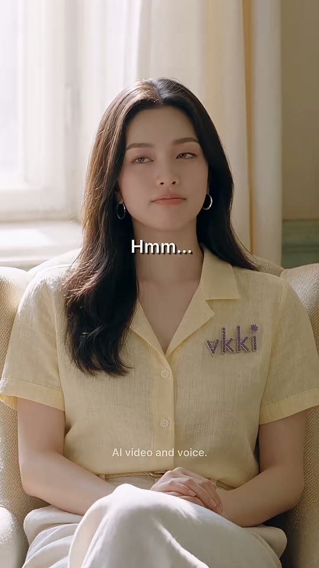
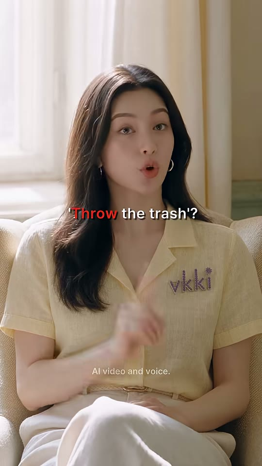

누나
얼굴
검지(z)
샷MS앵글아이레벨 정면카메라고정구도누나 중앙, 크림 부클레 암체어에 앉음. 뒤로 시어 커튼 창(강한 역광·하이키), 얼굴은 소프트 프런트 필. 무릎 위 손 → 오른손 검지 세우기동작옆으로 시선 굴리며 'Hmm...' → 입 모아 검지 하나 들고 확신에 찬 오답 제시대사누나: "Hmm... Throw the trash." (3.50~4.70s)화면 자막'Hmm...'(3.54~4.08 흰색) → ''Throw the trash'?'(4.08~5.13) — 'Throw'만 빨강 #F82000, y≈45.8%들어오는 전환하드컷(질문→답하는 사람, 정반대 시선 매칭)효과음/음악룸톤역할오답 제시(빨강 = 틀림 예고)
1순위
seedance-2-5생각→확신 표정 전환
2순위
minimax-h3립싱크, 무료
3순위
kling-v3검지 드는 손 동작 안정
① 이미지 프롬프트 (원본 클론)photorealistic cinematic live-action film still, vertical 9:16 (608x1080), quiet European boutique-hotel drama look, warm late-morning sunlight through tall sheer-curtained windows, soft creamy color grade, fine film grain, shallow depth of field, K-drama beauty lighting on faces. Medium shot, eye level: a Korean woman in her mid 20s, long straight dark-brown hair, small silver hoop earrings, natural glowy makeup, pale-butter-yellow short-sleeve camp-collar linen blouse with a small sparkly pink-purple rhinestone 'vkki' logo (tiny star on the i) on the left chest, cream wide trousers, seated in a cream bouclé armchair, hands folded in lap, in front of a tall bright window with sheer cream curtains (strong soft backlight), eyes glancing sideways in thought, lips pursed. 50mm, f/2.
② 영상 프롬프트 (원본 클론)Static. She hums while glancing to the side, then raises her right index finger with a confident 'I know this' face and answers. Lip-sync (Korean-accented female, confident): "Hmm... Throw the trash." Duration: 1.58 s.
③ 동물 버전 이미지 프롬프트photorealistic live-action film still with anthropomorphic animal actors (real fur, real eyes, Zootopia-level expressiveness but photographic), human-scale upright bodies wearing real clothes, vertical 9:16 (608x1080), European boutique-hotel look, warm late-morning window sunlight, creamy grade, shallow depth of field. Medium shot, eye level: Nabi, an anthropomorphic Ragdoll cat (human-scale, upright), long cream fur with dark-brown face points, sapphire-blue eyes, small silver hoop earrings, pale-butter-yellow camp-collar linen blouse with a small sparkly pink-purple rhinestone 'vkki' logo (tiny star on the i) on the left chest, cream wide trousers, seated in a cream bouclé armchair, paws folded, in front of a tall bright window with sheer curtains, eyes glancing sideways, whiskers forward in thought. 50mm.
④ 동물 버전 영상 프롬프트Static. Nabi hums, glances sideways, then raises one paw with a single claw-less finger pad up, confident, and answers. Lip-sync: "Hmm... Throw the trash." Duration: 1.58 s.
네거티브subtitles, captions, text overlay, extra watermark, misspelled logo, extra fingers, fused fingers, deformed hands, warped face, face morphing between frames, duplicate characters, cartoon, anime, 3D plastic CGI skin, over-smoothed skin, horizontal frame, letterbox, low resolution, messy clutter in first frame, modern minimalist room || ANIMAL VERSION add: human faces, human hands, cartoon mascot costume, plush toy look, tiny animal in giant set
컷 3 · 오답 실행(명령) — 0.92초 초단컷으로 템포 가속
5.13s → 6.04s (0.92s)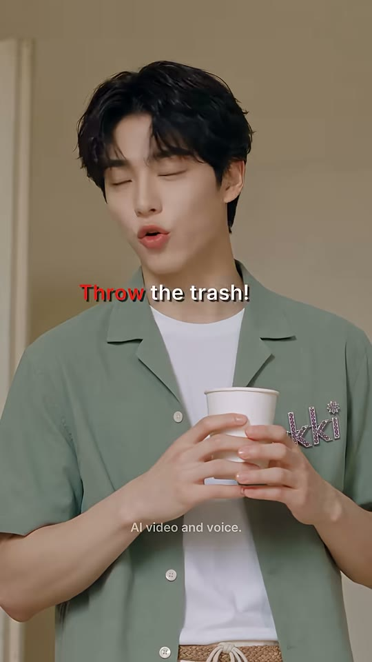


동생
얼굴(z, 우측 프로필)
샷MS앵글샷1과 동일카메라고정구도샷1 매치 프레이밍 — 같은 구도에서 동작만 다름. z프레임에 고개를 화면 오른쪽(메이드 방향, 화면 밖)으로 확 돌림 → 다음 와이드로 시선 연결동작눈 감고 자신 있게 크게 외침 → 고개를 오른쪽(방 안 메이드 쪽)으로 휙 돌림대사동생: "Throw the trash!" (4.96~5.60s)화면 자막'Throw the trash!' — 'Throw' 빨강, y≈44.2%들어오는 전환하드컷효과음/음악룸톤역할오답 실행(명령) — 0.92초 초단컷으로 템포 가속
1순위
hailuo-2-3빠른 고개 돌리기 코믹 템포
2순위
minimax-h3짧은 외침 립싱크, 무료
3순위
seedance-2-5샷1 얼굴 일관성
① 이미지 프롬프트 (원본 클론)photorealistic cinematic live-action film still, vertical 9:16 (608x1080), quiet European boutique-hotel drama look, warm late-morning sunlight through tall sheer-curtained windows, soft creamy color grade, fine film grain, shallow depth of field, K-drama beauty lighting on faces. Medium shot identical to his first shot: a slim Korean young man in his early 20s, fluffy dark-brown hair with curtain bangs, flawless fair skin, soft pink lips, sage-green short-sleeve camp-collar linen shirt worn open over a white t-shirt, cream drawstring trousers, woven belt, white sneakers, a small sparkly pink-purple rhinestone 'vkki' logo (tiny star on the i) on the left chest, holding a white paper cup with both hands at chest height, eyes closed, mouth open mid-shout with confidence.
② 영상 프롬프트 (원본 클론)Static. With eyes closed he calls out loudly and confidently, then snaps his head to frame right toward someone offscreen. Lip-sync (proud, loud): "Throw the trash!" Duration: 0.92 s.
③ 동물 버전 이미지 프롬프트photorealistic live-action film still with anthropomorphic animal actors (real fur, real eyes, Zootopia-level expressiveness but photographic), human-scale upright bodies wearing real clothes, vertical 9:16 (608x1080), European boutique-hotel look, warm late-morning window sunlight, creamy grade, shallow depth of field. Medium shot identical to Hamjji's first shot: Hamjji, an anthropomorphic golden Syrian hamster (human-scale, upright), fluffy golden-orange and cream fur, big glossy black eyes, chubby cheeks, sage-green camp-collar linen shirt open over a white tee, cream trousers, white sneakers, a small sparkly pink-purple rhinestone 'vkki' logo (tiny star on the i) on the left chest, holding a white paper cup with both paws, eyes closed, mouth open mid-shout, cheeks puffed.
④ 동물 버전 영상 프롬프트Static. Hamjji squeezes his eyes shut, shouts proudly, then snaps his head to frame right, ears flicking. Lip-sync: "Throw the trash!" Duration: 0.92 s.
네거티브subtitles, captions, text overlay, extra watermark, misspelled logo, extra fingers, fused fingers, deformed hands, warped face, face morphing between frames, duplicate characters, cartoon, anime, 3D plastic CGI skin, over-smoothed skin, horizontal frame, letterbox, low resolution, messy clutter in first frame, modern minimalist room || ANIMAL VERSION add: human faces, human hands, cartoon mascot costume, plush toy look, tiny animal in giant set
컷 4 · 비주얼 펀치: 문자 그대로 해석된 결과(Hotel Literal 세계관의 마법)
6.04s → 7.96s (1.92s)


누나(암체어)
빨간 휴지통
동생
메이드+카트(문간)
날아오르는 종이공
샷WS앵글아이레벨~약간 하이, 방 대각선 코너에서카메라고정구도방 전체 설정. 좌하 흰 침대 모서리, 좌중 창가 암체어의 누나(작게), 중앙 전경 세이지 러그 위 빨간 휴지통(시선 앵커·보색), 우측 1/3 동생 옆모습 전신, 그 뒤 문간에 메이드+카트. 창에서 들어온 햇빛이 러그에 강한 사선 그림자동작말 그대로 'throw' — 휴지통 속 종이공들이 폭발하듯 튀어올라 포물선을 그리며 방 왼쪽 위로 날아가 누나 쪽과 바닥에 우수수 떨어짐. 인물들은 거의 정지(놀람)대사(대사 없음) — 7.58s부터 메이드 'Throw?' 음성 선행(J컷)화면 자막자막 없음들어오는 전환하드컷(고개 돌린 방향 = 휴지통 방향, 시선 매치컷)효과음/음악6.25s 종이 폭발 '팡/후두둑' + 휘익(피크 -12dB), 종이 떨어지는 사각거림역할비주얼 펀치: 문자 그대로 해석된 결과(Hotel Literal 세계관의 마법)
1순위
veo-3-1와이드 물리 효과(종이 분수)+SFX 동시 생성
2순위
kling-v3다수 파티클 궤적 안정
3순위
wan-v3-0환경·와이드 백업
① 이미지 프롬프트 (원본 클론)photorealistic cinematic live-action film still, vertical 9:16 (608x1080), quiet European boutique-hotel drama look, warm late-morning sunlight through tall sheer-curtained windows, soft creamy color grade, fine film grain, shallow depth of field, K-drama beauty lighting on faces. Wide shot of a classic Parisian-style hotel room: warm cream plaster walls, pale sage-green wainscot panels, cornice molding, honey oak herringbone parquet, a faded sage-green rug, white bed at left, cream bouclé armchair by a tall window with sheer curtains, open double doorway to a dim hallway. a glossy red metal pedal trash bin overflowing with crumpled white paper balls stands on the sage rug in the center foreground casting a long sunlit shadow. The young man in a sage shirt and cream trousers stands at right in profile holding a paper cup; the woman in a pale-yellow blouse sits in the armchair by the window at left; a maid in grey with a brass cart waits in the doorway behind him. 24mm, deep focus, hard window sunlight.
② 영상 프롬프트 (원본 클론)Static wide. Suddenly dozens of crumpled paper balls burst upward out of the red bin like a fountain, arc high across the room toward the window and rain down over the floor, the rug and the woman in the armchair. The people freeze in surprise. Paper whoosh and patter sound effects, no dialogue. Duration: 1.92 s.
③ 동물 버전 이미지 프롬프트photorealistic live-action film still with anthropomorphic animal actors (real fur, real eyes, Zootopia-level expressiveness but photographic), human-scale upright bodies wearing real clothes, vertical 9:16 (608x1080), European boutique-hotel look, warm late-morning window sunlight, creamy grade, shallow depth of field. Wide shot of a classic Parisian-style hotel room: warm cream plaster walls, pale sage-green wainscot panels, cornice molding, honey oak herringbone parquet, a faded sage-green rug, white bed at left, cream bouclé armchair by a tall window with sheer curtains, open double doorway to a dim hallway. a glossy red metal pedal trash bin overflowing with crumpled white paper balls on the sage rug in the center foreground. Hamjji in a sage shirt stands at right in profile with a paper cup; Nabi the Ragdoll cat sits in the armchair by the window at left; Coco the Abyssinian maid with a brass cart waits in the doorway. 24mm, deep focus.
④ 동물 버전 영상 프롬프트Static wide. Paper balls burst out of the red bin like a fountain, arc across the room and rain down; Nabi's ears flatten, Hamjji's fur puffs up, Coco freezes. Paper whoosh and patter SFX, no dialogue. Duration: 1.92 s.
네거티브subtitles, captions, text overlay, extra watermark, misspelled logo, extra fingers, fused fingers, deformed hands, warped face, face morphing between frames, duplicate characters, cartoon, anime, 3D plastic CGI skin, over-smoothed skin, horizontal frame, letterbox, low resolution, messy clutter in first frame, modern minimalist room, paper balls disappearing mid-air, people moving erratically || ANIMAL VERSION add: human faces, human hands, cartoon mascot costume, plush toy look, tiny animal in giant set
컷 5 · 원인 설명+정답 제시(교사 역할). 영상 중 가장 긴 4.17초 = 학습 구간
7.96s → 12.13s (4.17s)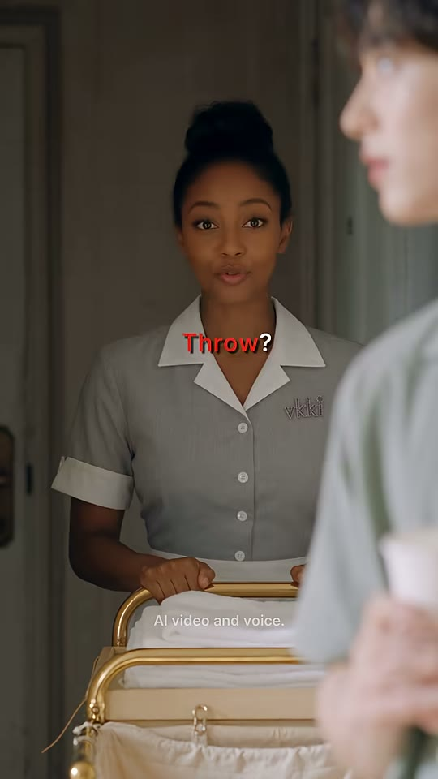

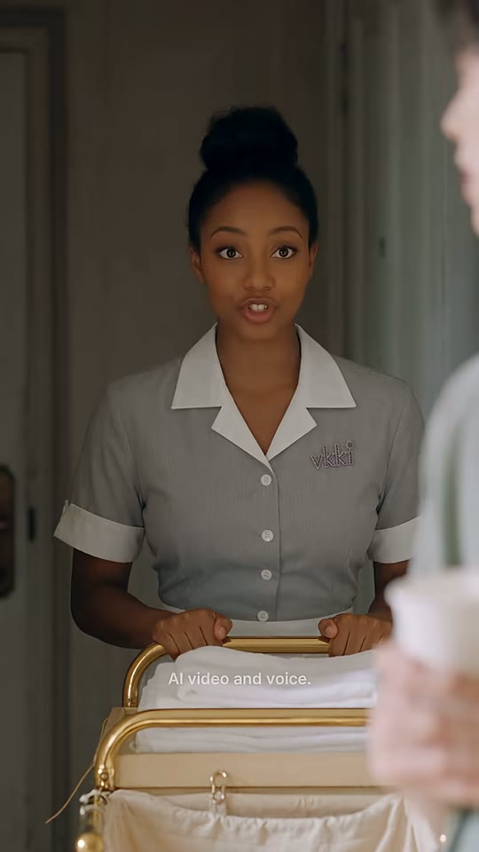
메이드
얼굴
동생 OTS(블러)
황동 카트
샷MS (OTS)앵글아이레벨, 동생 오른어깨 너머카메라고정구도우측 25%에 초점 나간 동생 옆얼굴·어깨·종이컵(OTS 전경), 좌중앙 메이드가 어두운 복도 문간에서 황동 카트 손잡이를 잡고 섬. 복도는 로우키(차가운 회색), 얼굴에 따뜻한 키라이트동작'Throw?' 의아 → 'Look —' 방 안을 흘끗 가리키는 시선 → 'it's everywhere' 곁눈질로 난장판 → 'Then say —' 정면 → 'Throw away the trash' 또박또박 가르침대사메이드: "Throw? Look, it's everywhere. Then say, 'Throw away the trash.'" (7.58~11.90s — 첫 'Throw?'는 앞 컷에서 0.38초 선행)화면 자막'Throw?'(7.96~8.30, Throw 빨강) → 'Look —'(8.30~8.98) → 'it's everywhere'(8.98~9.82) → 'Then say —'(9.82~10.78) → 'Throw away the trash'(10.78~12.13, 'Throw away' 노랑 #F8F800) y≈42~44%들어오는 전환하드컷 + J컷(메이드 음성이 와이드 컷 끝 0.38초 전에 먼저 들어옴)효과음/음악복도 룸톤역할원인 설명+정답 제시(교사 역할). 영상 중 가장 긴 4.17초 = 학습 구간
1순위
minimax-h34초 장문 대사 립싱크, 무료
2순위
kling-v3-omni긴 대사 립싱크 정확도
3순위
seedance-2-5시선 연기·원본 룩
① 이미지 프롬프트 (원본 클론)photorealistic cinematic live-action film still, vertical 9:16 (608x1080), quiet European boutique-hotel drama look, warm late-morning sunlight through tall sheer-curtained windows, soft creamy color grade, fine film grain, shallow depth of field, K-drama beauty lighting on faces. Over-the-shoulder medium shot from behind the young man's right shoulder (his blurred sage shirt, cheek and white paper cup fill the right quarter of the frame): a young Black woman in her mid 20s, hair in a neat high bun, warm brown skin, grey pinstripe housekeeping dress with white Peter-Pan collar and white cuffs, a small sparkly pink-purple rhinestone 'vkki' logo (tiny star on the i) on the left chest, both hands on the handle of a brass-framed hotel housekeeping cart with a canvas laundry bag and stacked white towels, standing in a dim cool-grey hallway doorway, warm key light on her face, calm curious expression. 50mm, f/1.8.
② 영상 프롬프트 (원본 클론)Static OTS. The maid tilts her head at the word, glances into the room at the mess, gives a small knowing smile, then looks back and teaches the correct phrase slowly and kindly. Lip-sync (warm American female, clear): "Throw? Look, it's everywhere. Then say, 'Throw away the trash.'" Duration: 4.17 s.
③ 동물 버전 이미지 프롬프트photorealistic live-action film still with anthropomorphic animal actors (real fur, real eyes, Zootopia-level expressiveness but photographic), human-scale upright bodies wearing real clothes, vertical 9:16 (608x1080), European boutique-hotel look, warm late-morning window sunlight, creamy grade, shallow depth of field. Over-the-shoulder from behind Hamjji's blurred furry cheek and paper cup (right quarter): Coco, an anthropomorphic Abyssinian cat (human-scale, upright), sleek ruddy ticked coat, large ears, amber eyes, a small white housekeeping headband, grey pinstripe housekeeping dress with white Peter-Pan collar and cuffs, a small sparkly pink-purple rhinestone 'vkki' logo (tiny star on the i) on the left chest, paws on a brass-framed housekeeping cart with canvas bag and white towels, standing in a dim hallway doorway, warm key light, curious expression. 50mm, f/1.8.
④ 동물 버전 영상 프롬프트Static OTS. Coco tilts her head, glances into the room at the mess, ears rotating, gives a knowing smile and teaches the phrase slowly. Lip-sync (warm American female): "Throw? Look, it's everywhere. Then say, 'Throw away the trash.'" Duration: 4.17 s.
네거티브subtitles, captions, text overlay, extra watermark, misspelled logo, extra fingers, fused fingers, deformed hands, warped face, face morphing between frames, duplicate characters, cartoon, anime, 3D plastic CGI skin, over-smoothed skin, horizontal frame, letterbox, low resolution, messy clutter in first frame, modern minimalist room || ANIMAL VERSION add: human faces, human hands, cartoon mascot costume, plush toy look, tiny animal in giant set
컷 6 · 복창 1회차
12.13s → 13.54s (1.42s)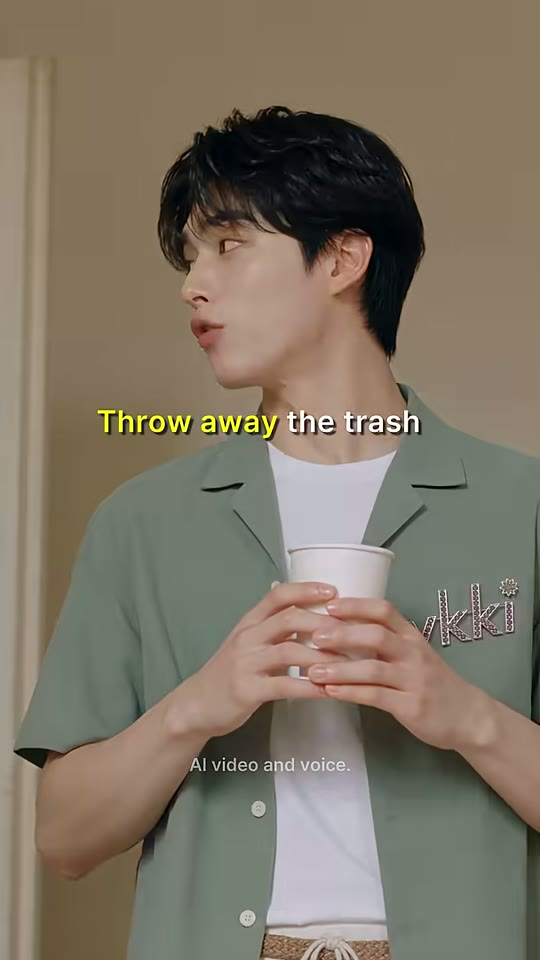
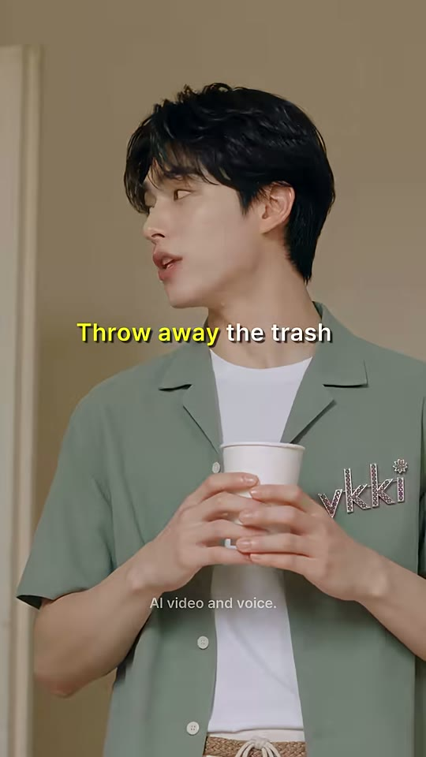
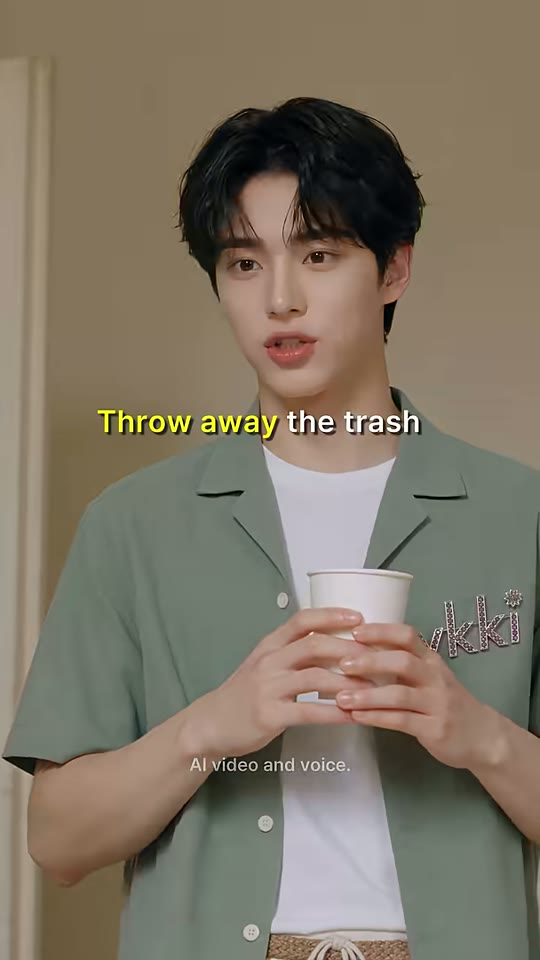
동생
얼굴
샷MS앵글아이레벨(샷1보다 약간 타이트·낮게)카메라고정구도동생이 화면 왼쪽(메이드 방향)을 보는 3/4 옆얼굴로 시작 → z에서 정면. 자막이 얼굴 바로 아래 y≈44%동작메이드를 보며 정답 문장을 천천히 따라 말함 → 카메라(누나) 쪽으로 고개 돌림대사동생: "Throw away the trash." (12.04~13.20s)화면 자막'Throw away the trash' — 'Throw away' 노랑, y≈43.9%들어오는 전환하드컷(가르침→복창)효과음/음악룸톤역할복창 1회차
1순위
minimax-h3립싱크, 무료
2순위
seedance-2-5얼굴 일관성
3순위
kling-v3-omni백업
① 이미지 프롬프트 (원본 클론)photorealistic cinematic live-action film still, vertical 9:16 (608x1080), quiet European boutique-hotel drama look, warm late-morning sunlight through tall sheer-curtained windows, soft creamy color grade, fine film grain, shallow depth of field, K-drama beauty lighting on faces. Medium shot, slightly tighter than before: a slim Korean young man in his early 20s, fluffy dark-brown hair with curtain bangs, flawless fair skin, soft pink lips, sage-green short-sleeve camp-collar linen shirt worn open over a white t-shirt, cream drawstring trousers, woven belt, white sneakers, a small sparkly pink-purple rhinestone 'vkki' logo (tiny star on the i) on the left chest, holding a white paper cup with both hands at chest height, head turned three-quarters to frame left looking at someone offscreen, lips parted mid-word. Cream wall and door molding behind. 50mm.
② 영상 프롬프트 (원본 클론)Static. Looking toward the maid offscreen left, he carefully repeats the phrase, then turns his face back to camera. Lip-sync (careful, Korean-accented): "Throw away the trash." Duration: 1.42 s.
③ 동물 버전 이미지 프롬프트photorealistic live-action film still with anthropomorphic animal actors (real fur, real eyes, Zootopia-level expressiveness but photographic), human-scale upright bodies wearing real clothes, vertical 9:16 (608x1080), European boutique-hotel look, warm late-morning window sunlight, creamy grade, shallow depth of field. Medium shot: Hamjji, an anthropomorphic golden Syrian hamster (human-scale, upright), fluffy golden-orange and cream fur, big glossy black eyes, chubby cheeks, sage-green camp-collar linen shirt open over a white tee, cream trousers, white sneakers, a small sparkly pink-purple rhinestone 'vkki' logo (tiny star on the i) on the left chest, holding a white paper cup with both paws, head turned three-quarters to frame left, mouth mid-word. Cream wall behind. 50mm.
④ 동물 버전 영상 프롬프트Static. Hamjji repeats the phrase carefully toward the maid, then turns back to camera. Lip-sync: "Throw away the trash." Duration: 1.42 s.
네거티브subtitles, captions, text overlay, extra watermark, misspelled logo, extra fingers, fused fingers, deformed hands, warped face, face morphing between frames, duplicate characters, cartoon, anime, 3D plastic CGI skin, over-smoothed skin, horizontal frame, letterbox, low resolution, messy clutter in first frame, modern minimalist room || ANIMAL VERSION add: human faces, human hands, cartoon mascot costume, plush toy look, tiny animal in giant set
컷 7 · 빈칸 퀴즈 1(능동 회상)
13.54s → 14.63s (1.08s)

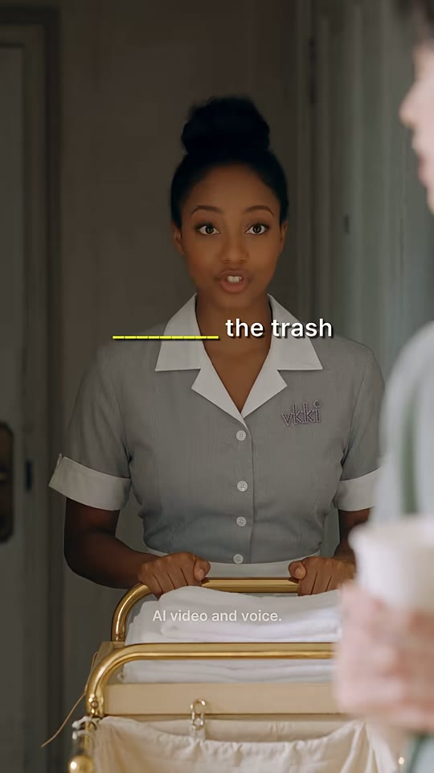
메이드
동생 OTS(블러)
샷MS (OTS)앵글샷5와 동일카메라고정구도샷5 셋업 재사용동작정면을 보며 정답 문장 한 번 더(확인하듯)대사메이드: "Throw away the trash." (13.42~14.30s)화면 자막빈칸 퀴즈 '________ the trash' — 빈칸은 노랑 언더스코어, y≈42.3%들어오는 전환하드컷효과음/음악룸톤역할빈칸 퀴즈 1(능동 회상)
1순위
minimax-h3짧은 립싱크, 무료
2순위
seedance-2-5연속성
3순위
gemini-omni-1-1-flash저비용 백업
① 이미지 프롬프트 (원본 클론)photorealistic cinematic live-action film still, vertical 9:16 (608x1080), quiet European boutique-hotel drama look, warm late-morning sunlight through tall sheer-curtained windows, soft creamy color grade, fine film grain, shallow depth of field, K-drama beauty lighting on faces. Same over-the-shoulder medium shot as before: a young Black woman in her mid 20s, hair in a neat high bun, warm brown skin, grey pinstripe housekeeping dress with white Peter-Pan collar and white cuffs, a small sparkly pink-purple rhinestone 'vkki' logo (tiny star on the i) on the left chest, both hands on the handle of a brass-framed hotel housekeeping cart with a canvas laundry bag and stacked white towels, looking straight ahead, mouth mid-word.
② 영상 프롬프트 (원본 클론)Static OTS. She repeats the phrase once more, nodding slightly. Lip-sync: "Throw away the trash." Duration: 1.08 s.
③ 동물 버전 이미지 프롬프트photorealistic live-action film still with anthropomorphic animal actors (real fur, real eyes, Zootopia-level expressiveness but photographic), human-scale upright bodies wearing real clothes, vertical 9:16 (608x1080), European boutique-hotel look, warm late-morning window sunlight, creamy grade, shallow depth of field. Same over-the-shoulder shot: Coco, an anthropomorphic Abyssinian cat (human-scale, upright), sleek ruddy ticked coat, large ears, amber eyes, a small white housekeeping headband, grey pinstripe housekeeping dress with white Peter-Pan collar and cuffs, a small sparkly pink-purple rhinestone 'vkki' logo (tiny star on the i) on the left chest, paws on a brass-framed housekeeping cart with canvas bag and white towels, looking ahead, mouth mid-word.
④ 동물 버전 영상 프롬프트Static OTS. Coco repeats the phrase with a small nod. Lip-sync: "Throw away the trash." Duration: 1.08 s.
네거티브subtitles, captions, text overlay, extra watermark, misspelled logo, extra fingers, fused fingers, deformed hands, warped face, face morphing between frames, duplicate characters, cartoon, anime, 3D plastic CGI skin, over-smoothed skin, horizontal frame, letterbox, low resolution, messy clutter in first frame, modern minimalist room || ANIMAL VERSION add: human faces, human hands, cartoon mascot costume, plush toy look, tiny animal in giant set
컷 8 · 빈칸 퀴즈 2(반복 4회 발화 완성)
14.63s → 16.0s (1.38s)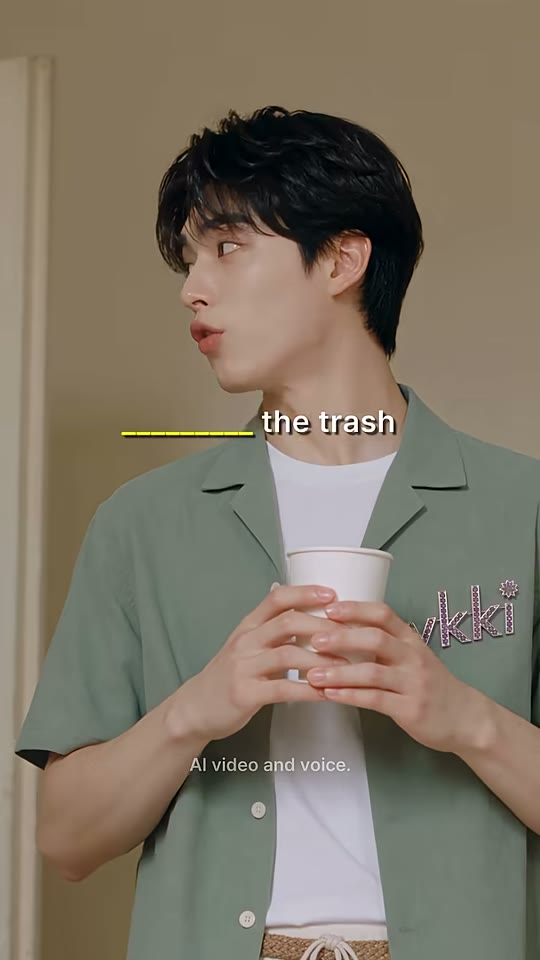

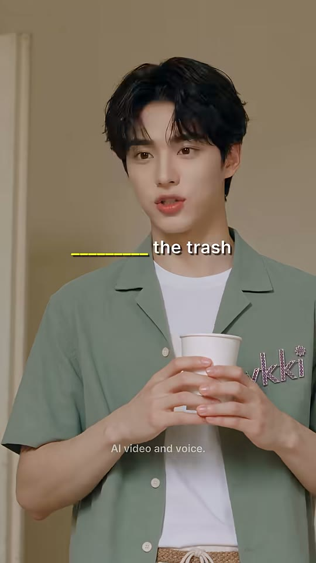
동생
얼굴
샷MS앵글샷6과 동일카메라고정구도샷6 셋업 재사용(3/4 옆얼굴→정면)동작이번엔 자신 있게 정답 문장 복창, 정면으로 돌아봄대사동생: "Throw away the trash." (14.50~15.60s)화면 자막빈칸 퀴즈 '________ the trash' 노랑 언더스코어, y≈43.9%들어오는 전환하드컷효과음/음악룸톤역할빈칸 퀴즈 2(반복 4회 발화 완성)
1순위
minimax-h3립싱크, 무료
2순위
seedance-2-5연속성
3순위
kling-v3-omni백업
① 이미지 프롬프트 (원본 클론)photorealistic cinematic live-action film still, vertical 9:16 (608x1080), quiet European boutique-hotel drama look, warm late-morning sunlight through tall sheer-curtained windows, soft creamy color grade, fine film grain, shallow depth of field, K-drama beauty lighting on faces. Same medium shot as his previous one: a slim Korean young man in his early 20s, fluffy dark-brown hair with curtain bangs, flawless fair skin, soft pink lips, sage-green short-sleeve camp-collar linen shirt worn open over a white t-shirt, cream drawstring trousers, woven belt, white sneakers, a small sparkly pink-purple rhinestone 'vkki' logo (tiny star on the i) on the left chest, holding a white paper cup with both hands at chest height, three-quarter profile to frame left, confident expression.
② 영상 프롬프트 (원본 클론)Static. He says the phrase confidently to the maid, then turns to camera. Lip-sync: "Throw away the trash." Duration: 1.38 s.
③ 동물 버전 이미지 프롬프트photorealistic live-action film still with anthropomorphic animal actors (real fur, real eyes, Zootopia-level expressiveness but photographic), human-scale upright bodies wearing real clothes, vertical 9:16 (608x1080), European boutique-hotel look, warm late-morning window sunlight, creamy grade, shallow depth of field. Same medium shot: Hamjji, an anthropomorphic golden Syrian hamster (human-scale, upright), fluffy golden-orange and cream fur, big glossy black eyes, chubby cheeks, sage-green camp-collar linen shirt open over a white tee, cream trousers, white sneakers, a small sparkly pink-purple rhinestone 'vkki' logo (tiny star on the i) on the left chest, holding a white paper cup with both paws, three-quarter profile, confident.
④ 동물 버전 영상 프롬프트Static. Hamjji says the phrase confidently, then turns to camera, cheeks lifting. Lip-sync: "Throw away the trash." Duration: 1.38 s.
네거티브subtitles, captions, text overlay, extra watermark, misspelled logo, extra fingers, fused fingers, deformed hands, warped face, face morphing between frames, duplicate characters, cartoon, anime, 3D plastic CGI skin, over-smoothed skin, horizontal frame, letterbox, low resolution, messy clutter in first frame, modern minimalist room || ANIMAL VERSION add: human faces, human hands, cartoon mascot costume, plush toy look, tiny animal in giant set
컷 9 · 페이오프 1: 정답을 말하면 세상이 바르게 반응(마법 규칙 완성)
16.0s → 17.42s (1.42s)

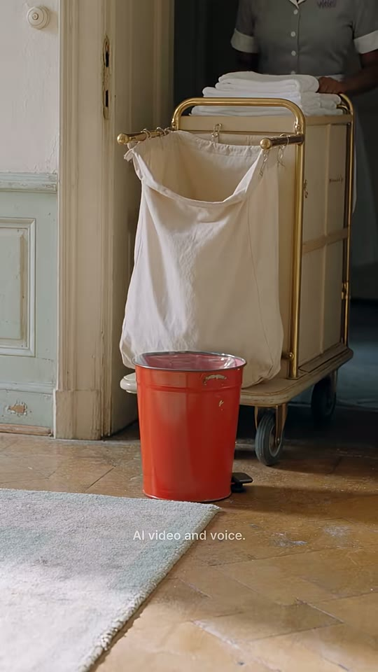
휴지통(a)
휴지통(z)
카트+자루
러그
샷MS (소품 인서트)앵글로우 앵글(바닥 20~30cm 높이)카메라고정구도문간 하단 인서트. 중앙에 황동 카트+캔버스 세탁 자루, 상단에 메이드 몸통·손(수건 정리, 얼굴은 프레임 밖), 좌하 러그 모서리. 빨간 휴지통이 a프레임 좌측 가장자리(x0) → z프레임 카트 앞(x47)으로 스스로 미끄러져 들어가 정지동작정답을 말하자 휴지통이 혼자 바닥을 미끄러져 카트 옆으로 '치워져' 감(throw away의 문자 그대로 실현). 메이드는 무심히 수건 정리대사(없음) — 17.02s부터 누나 'That's what I meant' 음성 선행(J컷)화면 자막자막 없음들어오는 전환하드컷(말→결과 인서트)효과음/음악금속 휴지통 바닥 긁히며 미끄러지는 소리 + 작은 '툭' 정지음(추정)역할페이오프 1: 정답을 말하면 세상이 바르게 반응(마법 규칙 완성)
1순위
kling-v3사물 자율 이동(마법 리얼리즘) 궤적 안정
2순위
veo-3-1물리+SFX 동시
3순위
wan-v3-0저비용 사물 모션 백업
① 이미지 프롬프트 (원본 클론)photorealistic cinematic live-action film still, vertical 9:16 (608x1080), quiet European boutique-hotel drama look, warm late-morning sunlight through tall sheer-curtained windows, soft creamy color grade, fine film grain, shallow depth of field, K-drama beauty lighting on faces. Low-angle medium insert near the floor at the doorway: a brass-framed housekeeping cart with a cream canvas laundry bag, the maid's torso and hands arranging white towels at top of frame (face cropped out), honey oak parquet and the edge of a sage rug. At the far left edge, a glossy red metal pedal trash bin now empty. 35mm, f/2.8.
② 영상 프롬프트 (원본 클론)Static low angle. The empty red bin glides by itself across the parquet from the left edge and stops neatly beside the housekeeping cart, as if tidying itself away. The maid keeps folding towels. Soft metal scrape, gentle stop thump. Duration: 1.42 s.
③ 동물 버전 이미지 프롬프트photorealistic live-action film still with anthropomorphic animal actors (real fur, real eyes, Zootopia-level expressiveness but photographic), human-scale upright bodies wearing real clothes, vertical 9:16 (608x1080), European boutique-hotel look, warm late-morning window sunlight, creamy grade, shallow depth of field. Low-angle insert near the floor at the doorway: brass housekeeping cart with canvas bag, Coco's furry torso and paws arranging white towels at top (face out of frame), parquet and rug edge, an empty red pedal bin at the far left edge. 35mm.
④ 동물 버전 영상 프롬프트Static low angle. The red bin glides by itself and parks beside the cart; Coco's tail swishes into frame. Metal scrape, soft thump. Duration: 1.42 s.
네거티브subtitles, captions, text overlay, extra watermark, misspelled logo, extra fingers, fused fingers, deformed hands, warped face, face morphing between frames, duplicate characters, cartoon, anime, 3D plastic CGI skin, over-smoothed skin, horizontal frame, letterbox, low resolution, messy clutter in first frame, modern minimalist room, visible hands pushing the bin, bin tipping over || ANIMAL VERSION add: human faces, human hands, cartoon mascot costume, plush toy look, tiny animal in giant set
컷 10 · 펀치라인(체면치레 데드팬 + 머리 위 쓰레기 시각 개그)
17.42s → 18.29s (0.88s)
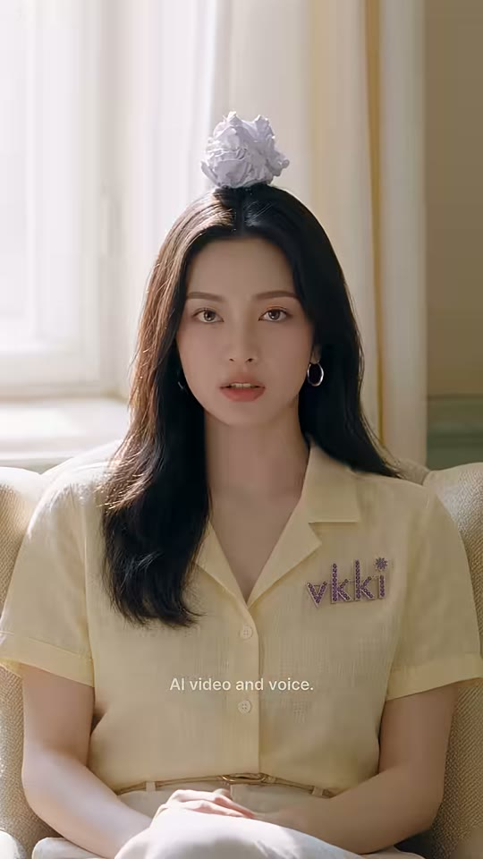
누나
머리 위 종이공
얼굴
샷MS앵글샷2와 동일카메라고정구도샷2 매치 프레이밍 — 같은 구도에 머리 위 구겨진 종이공 하나(샷4의 결과가 남은 증거) 추가. 대칭 정면동작머리 위에 종이공을 얹은 채 반쯤 감긴 눈 → 천천히 눈 뜨고 무표정으로 카메라 응시 '원래 그 뜻이었어'대사누나: "...That's what I meant." (17.02~18.24s, J컷으로 0.40초 선행)화면 자막'...That's what I meant' 흰색, y≈53.6%들어오는 전환하드컷 + J컷 오디오효과음/음악룸톤, 대사 후 18.87~19.36 무음역할펀치라인(체면치레 데드팬 + 머리 위 쓰레기 시각 개그)
1순위
seedance-2-5데드팬 눈뜨기 미세표정
2순위
kling-v3종이공 머리 위 고정 안정
3순위
minimax-h3립싱크, 무료
① 이미지 프롬프트 (원본 클론)photorealistic cinematic live-action film still, vertical 9:16 (608x1080), quiet European boutique-hotel drama look, warm late-morning sunlight through tall sheer-curtained windows, soft creamy color grade, fine film grain, shallow depth of field, K-drama beauty lighting on faces. Medium shot identical to her earlier shot: a Korean woman in her mid 20s, long straight dark-brown hair, small silver hoop earrings, natural glowy makeup, pale-butter-yellow short-sleeve camp-collar linen blouse with a small sparkly pink-purple rhinestone 'vkki' logo (tiny star on the i) on the left chest, cream wide trousers, seated in a cream bouclé armchair, hands folded in lap, with a single crumpled white paper ball resting on top of her head, eyelids half closed, perfectly deadpan, bright sheer-curtained window behind. 50mm.
② 영상 프롬프트 (원본 클론)Static. With a paper ball sitting on her head, she slowly opens her half-closed eyes and states flatly to camera, zero emotion. Lip-sync (dry Korean-accented female): "...That's what I meant." Duration: 0.88 s.
③ 동물 버전 이미지 프롬프트photorealistic live-action film still with anthropomorphic animal actors (real fur, real eyes, Zootopia-level expressiveness but photographic), human-scale upright bodies wearing real clothes, vertical 9:16 (608x1080), European boutique-hotel look, warm late-morning window sunlight, creamy grade, shallow depth of field. Medium shot identical to Nabi's earlier shot: Nabi, an anthropomorphic Ragdoll cat (human-scale, upright), long cream fur with dark-brown face points, sapphire-blue eyes, small silver hoop earrings, pale-butter-yellow camp-collar linen blouse with a small sparkly pink-purple rhinestone 'vkki' logo (tiny star on the i) on the left chest, cream wide trousers, seated in a cream bouclé armchair, paws folded, a crumpled white paper ball balanced between her ears, half-closed unimpressed eyes, ears slightly back.
④ 동물 버전 영상 프롬프트Static. Nabi, paper ball between her ears, opens her eyes slowly and deadpans to camera, tail tip flicking once. Lip-sync (dry): "...That's what I meant." Duration: 0.88 s.
네거티브subtitles, captions, text overlay, extra watermark, misspelled logo, extra fingers, fused fingers, deformed hands, warped face, face morphing between frames, duplicate characters, cartoon, anime, 3D plastic CGI skin, over-smoothed skin, horizontal frame, letterbox, low resolution, messy clutter in first frame, modern minimalist room || ANIMAL VERSION add: human faces, human hands, cartoon mascot costume, plush toy look, tiny animal in giant set
컷 11 · 버튼 샷(여운·상황 정리) + 엔드카드 배경 제공
18.29s → 19.54s (1.25s)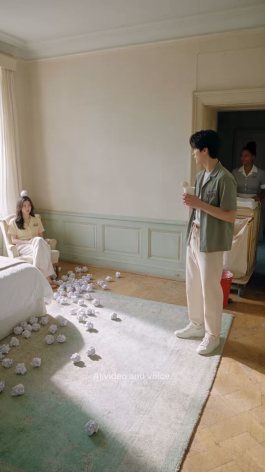

흩어진 종이공
누나
동생
메이드+카트+휴지통
샷WS앵글샷4와 동일카메라고정구도샷4 매치 프레이밍 — 비포/애프터. 러그와 바닥에 종이공 수십 개 흩어짐, 누나 머리 위 종이공, 동생은 컵 들고 서 있음, 휴지통은 문간 카트 옆(x≈85)으로 이동해 있음동작모두 정지한 태블로(어색한 침묵), 미세한 호흡만대사(없음)화면 자막자막 없음들어오는 전환하드컷효과음/음악18.87~19.36 무음 → 룸톤역할버튼 샷(여운·상황 정리) + 엔드카드 배경 제공
1순위
veo-3-1와이드 정적 환경 퀄리티
2순위
wan-v3-0정적 와이드 저비용
3순위
kling-v3샷4와 구도 일치
① 이미지 프롬프트 (원본 클론)photorealistic cinematic live-action film still, vertical 9:16 (608x1080), quiet European boutique-hotel drama look, warm late-morning sunlight through tall sheer-curtained windows, soft creamy color grade, fine film grain, shallow depth of field, K-drama beauty lighting on faces. The same wide shot of a classic Parisian-style hotel room: warm cream plaster walls, pale sage-green wainscot panels, cornice molding, honey oak herringbone parquet, a faded sage-green rug, white bed at left, cream bouclé armchair by a tall window with sheer curtains, open double doorway to a dim hallway, now a mess: dozens of crumpled white paper balls scattered across the sage rug and parquet. The woman in the armchair has a paper ball on her head, the young man stands at right holding his cup, the maid waits in the doorway beside her cart with the red bin now parked next to it. 24mm, deep focus, sunlight shaft on the rug.
② 영상 프롬프트 (원본 클론)Static wide tableau. Everyone stays still in awkward silence, only tiny breathing movements; dust motes drift in the sunbeam. No dialogue. Duration: 1.25 s.
③ 동물 버전 이미지 프롬프트photorealistic live-action film still with anthropomorphic animal actors (real fur, real eyes, Zootopia-level expressiveness but photographic), human-scale upright bodies wearing real clothes, vertical 9:16 (608x1080), European boutique-hotel look, warm late-morning window sunlight, creamy grade, shallow depth of field. The same wide shot of a classic Parisian-style hotel room: warm cream plaster walls, pale sage-green wainscot panels, cornice molding, honey oak herringbone parquet, a faded sage-green rug, white bed at left, cream bouclé armchair by a tall window with sheer curtains, open double doorway to a dim hallway, paper balls scattered everywhere; Nabi with a paper ball between her ears, Hamjji standing at right with his cup, Coco in the doorway beside her cart with the red bin parked next to it. 24mm.
④ 동물 버전 영상 프롬프트Static wide tableau, awkward silence; only whiskers and tails twitch, dust motes in the sunbeam. Duration: 1.25 s.
네거티브subtitles, captions, text overlay, extra watermark, misspelled logo, extra fingers, fused fingers, deformed hands, warped face, face morphing between frames, duplicate characters, cartoon, anime, 3D plastic CGI skin, over-smoothed skin, horizontal frame, letterbox, low resolution, messy clutter in first frame, modern minimalist room || ANIMAL VERSION add: human faces, human hands, cartoon mascot costume, plush toy look, tiny animal in giant set
컷 12 · 학습 정리 카드 + 무음으로 끝나 루프 시 첫 대사가 선명하게 들림
19.54s → 21.13s (1.59s)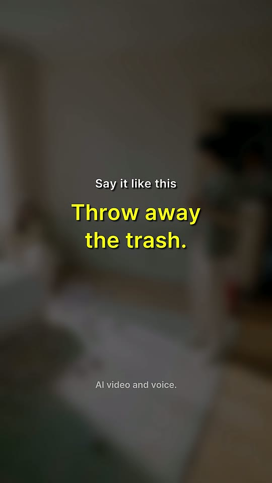

Say it like this
Throw away / the trash.
워터마크
샷엔드카드(정지 이미지)앵글샷11 마지막 프레임 재사용카메라정지(프리즈 프레임)구도샷11 마지막 프레임을 강한 가우시안 블러(σ≈20)+밝기 약 50%로 어둡게 깐 배경. 중앙 상단 'Say it like this'(작은 흰색, y≈38%) + 'Throw away / the trash.'(큰 노랑 2줄, y≈44%/49%). 워터마크 유지동작정지 화면, 정답 문장 카드대사(없음 — 완전 디지털 무음)화면 자막'Say it like this'(흰색 소형) + 'Throw away\Nthe trash.'(노랑 #F8F800 대형 2줄, 전체 노랑)들어오는 전환하드컷(블러 스틸로 즉시 전환, 디졸브 없음)효과음/음악무음(19.51~21.13 -inf dB)역할학습 정리 카드 + 무음으로 끝나 루프 시 첫 대사가 선명하게 들림
1순위
wan-v3-0생성 불필요 — 필요 시 정지 배경 대체 생성용
① 이미지 프롬프트 (원본 클론)(생성 불필요) 샷11 마지막 프레임을 FFmpeg로 블러·어둡게 처리해 사용
② 영상 프롬프트 (원본 클론)(생성 불필요) 1.59 s still end card built in FFmpeg/HyperFrames: blurred darkened last frame + text.
③ 동물 버전 이미지 프롬프트(생성 불필요) 동물 버전 샷11 마지막 프레임을 동일하게 블러 처리
④ 동물 버전 영상 프롬프트(생성 불필요) Same 1.59 s still end card from the animal wide shot's last frame.
네거티브n/a
✂️ 편집 키트
타임라인0.00 동생 MS 질문(3.54s) → 3.54 누나 MS 오답(빨강 Throw) → 5.13 동생 복창+고개 돌림 → 6.04 와이드 종이 분수(자막 없음, 7.58 J컷 음성) → 7.96 메이드 OTS 설명+정답(노랑 Throw away, 4.17s) → 12.13 동생 복창 → 13.54 메이드 빈칸 → 14.63 동생 빈칸 → 16.00 휴지통 자율 이동 인서트(17.02 J컷) → 17.42 누나 종이공 데드팬 → 18.29 난장판 와이드 태블로 → 19.54 블러 엔드카드(무음) → 21.13 끝. 전환 100% 하드컷
FFmpeg 명령# === vk_mzrdyFYx9hI 클론 편집 (Git Bash 기준, raw/ s01~s11.mp4 생성본, 샷12는 FFmpeg로 제작) ===
mkdir -p clips
# 0) 컷별 정규화: 608x1080·24fps·프레임 정확(샷1~11 = 469f = 19.542s)
ffmpeg -y -i raw/s01.mp4 -frames:v 85 -vf "scale=608:1080:force_original_aspect_ratio=increase,crop=608:1080,fps=24,setsar=1,format=yuv420p" -af "aresample=44100,apad" -t 3.5417 -c:v libx264 -crf 16 -preset slow -c:a aac -b:a 192k -ar 44100 -ac 2 clips/s01.mp4
ffmpeg -y -i raw/s02.mp4 -frames:v 38 -vf "scale=608:1080:force_original_aspect_ratio=increase,crop=608:1080,fps=24,setsar=1,format=yuv420p" -af "aresample=44100,apad" -t 1.5833 -c:v libx264 -crf 16 -preset slow -c:a aac -b:a 192k -ar 44100 -ac 2 clips/s02.mp4
ffmpeg -y -i raw/s03.mp4 -frames:v 22 -vf "scale=608:1080:force_original_aspect_ratio=increase,crop=608:1080,fps=24,setsar=1,format=yuv420p" -af "aresample=44100,apad" -t 0.9167 -c:v libx264 -crf 16 -preset slow -c:a aac -b:a 192k -ar 44100 -ac 2 clips/s03.mp4
ffmpeg -y -i raw/s04.mp4 -frames:v 46 -vf "scale=608:1080:force_original_aspect_ratio=increase,crop=608:1080,fps=24,setsar=1,format=yuv420p" -af "aresample=44100,apad" -t 1.9167 -c:v libx264 -crf 16 -preset slow -c:a aac -b:a 192k -ar 44100 -ac 2 clips/s04.mp4
ffmpeg -y -i raw/s05.mp4 -frames:v 100 -vf "scale=608:1080:force_original_aspect_ratio=increase,crop=608:1080,fps=24,setsar=1,format=yuv420p" -af "aresample=44100,apad" -t 4.1667 -c:v libx264 -crf 16 -preset slow -c:a aac -b:a 192k -ar 44100 -ac 2 clips/s05.mp4
ffmpeg -y -i raw/s06.mp4 -frames:v 34 -vf "scale=608:1080:force_original_aspect_ratio=increase,crop=608:1080,fps=24,setsar=1,format=yuv420p" -af "aresample=44100,apad" -t 1.4167 -c:v libx264 -crf 16 -preset slow -c:a aac -b:a 192k -ar 44100 -ac 2 clips/s06.mp4
ffmpeg -y -i raw/s07.mp4 -frames:v 26 -vf "scale=608:1080:force_original_aspect_ratio=increase,crop=608:1080,fps=24,setsar=1,format=yuv420p" -af "aresample=44100,apad" -t 1.0833 -c:v libx264 -crf 16 -preset slow -c:a aac -b:a 192k -ar 44100 -ac 2 clips/s07.mp4
ffmpeg -y -i raw/s08.mp4 -frames:v 33 -vf "scale=608:1080:force_original_aspect_ratio=increase,crop=608:1080,fps=24,setsar=1,format=yuv420p" -af "aresample=44100,apad" -t 1.3750 -c:v libx264 -crf 16 -preset slow -c:a aac -b:a 192k -ar 44100 -ac 2 clips/s08.mp4
ffmpeg -y -i raw/s09.mp4 -frames:v 34 -vf "scale=608:1080:force_original_aspect_ratio=increase,crop=608:1080,fps=24,setsar=1,format=yuv420p" -af "aresample=44100,apad" -t 1.4167 -c:v libx264 -crf 16 -preset slow -c:a aac -b:a 192k -ar 44100 -ac 2 clips/s09.mp4
ffmpeg -y -i raw/s10.mp4 -frames:v 21 -vf "scale=608:1080:force_original_aspect_ratio=increase,crop=608:1080,fps=24,setsar=1,format=yuv420p" -af "aresample=44100,apad" -t 0.8750 -c:v libx264 -crf 16 -preset slow -c:a aac -b:a 192k -ar 44100 -ac 2 clips/s10.mp4
ffmpeg -y -i raw/s11.mp4 -frames:v 30 -vf "scale=608:1080:force_original_aspect_ratio=increase,crop=608:1080,fps=24,setsar=1,format=yuv420p" -af "aresample=44100,apad" -t 1.2500 -c:v libx264 -crf 16 -preset slow -c:a aac -b:a 192k -ar 44100 -ac 2 clips/s11.mp4
# 1) 엔드카드(샷12, 38f=1.588s): 샷11 마지막 프레임 → 가우시안 블러+어둡게, 디지털 무음
ffmpeg -y -sseof -0.05 -i clips/s11.mp4 -frames:v 1 -update 1 endbg.png
ffmpeg -y -loop 1 -framerate 24 -i endbg.png -f lavfi -i anullsrc=r=44100:cl=stereo -vf "gblur=sigma=20,eq=brightness=-0.22:saturation=0.8,format=yuv420p" -frames:v 38 -t 1.5833 -c:v libx264 -crf 16 -preset slow -c:a aac -b:a 192k clips/s12.mp4
# 2) concat (전환 전부 하드컷)
for i in $(seq -w 1 12); do echo "file 'clips/s$i.mp4'"; done > list.txt
ffmpeg -y -f concat -safe 0 -i list.txt -c copy joined.mp4
# 3) J컷 2곳 재현(대사를 별도 파일로 쓸 때): 메이드 'Throw?…' 7580ms 시작(컷 7958보다 0.38s 선행), 누나 'That's what I meant' 17020ms 시작(컷 17417보다 0.40s 선행)
ffmpeg -y -i joined.mp4 -i vo/01_boy.wav -i vo/02_noona.wav -i vo/03_boy.wav -i vo/04_maid.wav -i vo/05_boy.wav -i vo/06_maid.wav -i vo/07_boy.wav -i vo/08_noona.wav -i sfx/paper_burst.wav -i sfx/bin_slide.wav -filter_complex "[1:a]adelay=0|0[a1];[2:a]adelay=3500|3500[a2];[3:a]adelay=4960|4960[a3];[4:a]adelay=7580|7580[a4];[5:a]adelay=12040|12040[a5];[6:a]adelay=13420|13420[a6];[7:a]adelay=14500|14500[a7];[8:a]adelay=17020|17020[a8];[9:a]adelay=6200|6200,volume=0.9[f1];[10:a]adelay=16050|16050,volume=0.7[f2];[a1][a2][a3][a4][a5][a6][a7][a8][f1][f2]amix=inputs=10:normalize=0[vo];[0:a]volume=0.3[amb];[amb][vo]amix=inputs=2:duration=first:normalize=0,atrim=0:21.13,afade=t=out:st=19.50:d=0.04[mix]" -map 0:v -map "[mix]" -c:v copy -c:a aac -b:a 192k joined_vo.mp4
# 4) (옵션) BGM 덕킹 — 원본은 BGM 없음(추정). 넣을 경우 엔드카드 전까지만, 대사 구간 자동 감쇠
ffmpeg -y -i joined.mp4 -stream_loop -1 -i bgm.mp3 -filter_complex "[0:a]asplit=2[dry][sc];[1:a]volume=0.15,atrim=0:19.54,apad=whole_dur=21.13[bg];[bg][sc]sidechaincompress=threshold=0.02:ratio=10:attack=15:release=350[duck];[dry][duck]amix=inputs=2:duration=first:normalize=0[a]" -map 0:v -map "[a]" -c:v copy -c:a aac -b:a 192k joined_bgm.mp4
# 5) 자막+엔드카드 텍스트+워터마크 burn-in (vk_mzrdyFYx9hI.ass = edit.ass_subtitle 그대로 저장, Inter 설치 필요)
ffmpeg -y -i joined.mp4 -vf "ass=vk_mzrdyFYx9hI.ass" -c:v libx264 -crf 17 -preset slow -pix_fmt yuv420p -c:a copy subbed.mp4
# 6) 라우드니스: 원본 -16.2 LUFS / 업로드 권장 -14 LUFS (엔드카드 무음은 loudnorm 후에도 유지됨)
ffmpeg -y -i subbed.mp4 -af "loudnorm=I=-14:TP=-1.5:LRA=11" -c:v copy -c:a aac -b:a 192k -ar 44100 final_vk_mzrdyFYx9hI.mp4
# 원본 1:1: loudnorm=I=-16.2:TP=-1.5:LRA=6.1
ASS 자막 스타일[Script Info]
ScriptType: v4.00+
PlayResX: 608
PlayResY: 1080
WrapStyle: 2
ScaledBorderAndShadow: yes
[V4+ Styles]
Format: Name, Fontname, Fontsize, PrimaryColour, SecondaryColour, OutlineColour, BackColour, Bold, Italic, Underline, StrikeOut, ScaleX, ScaleY, Spacing, Angle, BorderStyle, Outline, Shadow, Alignment, MarginL, MarginR, MarginV, Encoding
Style: Cap,Inter,36,&H00FFFFFF,&H00FFFFFF,&H00000000,&H8C000000,-1,0,0,0,100,100,0,0,1,0.6,2,5,20,20,0,1
Style: WM,Inter,22,&H50FFFFFF,&H50FFFFFF,&H00000000,&HB4000000,0,0,0,0,100,100,0.2,0,1,0,1,5,0,0,0,1
Style: EndS,Inter,28,&H00FFFFFF,&H00FFFFFF,&H00000000,&H8C000000,-1,0,0,0,100,100,0,0,1,0,1.5,5,0,0,0,1
Style: EndB,Inter,50,&H0000F8F8,&H0000F8F8,&H00000000,&H8C000000,-1,0,0,0,100,100,0,0,1,0,2,5,0,0,0,1
[Events]
Format: Layer, Start, End, Style, Name, MarginL, MarginR, MarginV, Effect, Text
Dialogue: 1,0:00:00.00,0:00:00.58,Cap,,0,0,0,,{\pos(304,478)}Noona —
Dialogue: 1,0:00:00.58,0:00:02.60,Cap,,0,0,0,,{\pos(304,478)}trash... bye-bye?
Dialogue: 1,0:00:02.60,0:00:03.54,Cap,,0,0,0,,{\pos(304,478)}What do I say?
Dialogue: 1,0:00:03.54,0:00:04.08,Cap,,0,0,0,,{\pos(304,469)}Hmm...
Dialogue: 1,0:00:04.08,0:00:05.13,Cap,,0,0,0,,{\pos(304,494)}'{\c&H0020F8&}Throw{\c&HFFFFFF&} the trash'?
Dialogue: 1,0:00:05.13,0:00:06.04,Cap,,0,0,0,,{\pos(304,478)}{\c&H0020F8&}Throw{\c&HFFFFFF&} the trash!
Dialogue: 1,0:00:07.96,0:00:08.30,Cap,,0,0,0,,{\pos(304,474)}{\c&H0020F8&}Throw{\c&HFFFFFF&}?
Dialogue: 1,0:00:08.30,0:00:08.98,Cap,,0,0,0,,{\pos(304,466)}Look —
Dialogue: 1,0:00:08.98,0:00:09.82,Cap,,0,0,0,,{\pos(304,466)}it's everywhere
Dialogue: 1,0:00:09.82,0:00:10.78,Cap,,0,0,0,,{\pos(304,466)}Then say —
Dialogue: 1,0:00:10.78,0:00:12.13,Cap,,0,0,0,,{\pos(304,458)}{\c&H00F8F8&}Throw away{\c&HFFFFFF&} the trash
Dialogue: 1,0:00:12.13,0:00:13.54,Cap,,0,0,0,,{\pos(304,474)}{\c&H00F8F8&}Throw away{\c&HFFFFFF&} the trash
Dialogue: 1,0:00:13.54,0:00:14.63,Cap,,0,0,0,,{\pos(304,457)}{\c&H00F8F8&}________{\c&HFFFFFF&} the trash
Dialogue: 1,0:00:14.63,0:00:16.00,Cap,,0,0,0,,{\pos(304,474)}{\c&H00F8F8&}________{\c&HFFFFFF&} the trash
Dialogue: 1,0:00:17.42,0:00:18.29,Cap,,0,0,0,,{\pos(304,579)}...That's what I meant
Dialogue: 1,0:00:19.54,0:00:21.13,EndS,,0,0,0,,{\pos(304,410)}Say it like this
Dialogue: 1,0:00:19.54,0:00:21.13,EndB,,0,0,0,,{\pos(304,476)}Throw away
Dialogue: 1,0:00:19.54,0:00:21.13,EndB,,0,0,0,,{\pos(304,538)}the trash.
Dialogue: 0,0:00:00.00,0:00:21.13,WM,,0,0,0,,{\pos(304,862)}AI video and voice.
HyperFrames 편집 프롬프트 (Claude에 그대로 붙여넣기)HyperFrames로 9:16(608x1080, 24fps) 컴포지션을 만들어줘. 총 21130ms. 트랙1(비디오, 하드컷만): s01 0~3542ms, s02 3542~5125, s03 5125~6042, s04 6042~7958, s05 7958~12125, s06 12125~13542, s07 13542~14625, s08 14625~16000, s09 16000~17417, s10 17417~18292, s11 18292~19542. 19542~21130은 엔드카드: s11 마지막 프레임을 정지(freeze)시키고 filter: blur(20px) brightness(0.5) saturate(0.8), 전환 효과 없이 즉시 등장. 트랙2(자막): Inter Bold 30px, 흰색, 외곽선 없음, text-shadow 2px 2px 3px rgba(0,0,0,.55), 가로 중앙, 줄 중심 y(px) 지정, 즉시 on/off. 0~580 'Noona —' y478 / 580~2600 'trash... bye-bye?' y478 / 2600~3540 'What do I say?' y478 / 3540~4080 'Hmm...' y469 / 4080~5130 "'Throw the trash'?"(Throw=#F82000) y494 / 5130~6040 'Throw the trash!'(Throw 빨강) y478 / 6040~7960 자막 없음 / 7960~8300 'Throw?'(Throw 빨강) y474 / 8300~8980 'Look —' y466 / 8980~9820 "it's everywhere" y466 / 9820~10780 'Then say —' y466 / 10780~12130 'Throw away the trash'(Throw away=#F8F800) y458 / 12130~13540 같은 문장 y474 / 13540~14630 '________ the trash'(밑줄 노랑) y457 / 14630~16000 같은 빈칸 y474 / 16000~17420 자막 없음 / 17420~18290 "...That's what I meant" y579 / 18290~19540 자막 없음. 엔드카드 텍스트(19542~21130): 'Say it like this' Inter Bold 23px 흰색 y410, 'Throw away' / 'the trash.' Inter Bold 41px #F8F800 두 줄 y476·y538, 그림자 동일. 트랙3(워터마크): 'AI video and voice.' Inter Medium 18px 흰색 65% 불투명, 가로 중앙 y862, 0~21130 고정. 트랙4(오디오): 클립 원음, 메이드 대사는 7580ms, 누나 마지막 대사는 17020ms에 시작하도록 J컷(각각 영상 컷보다 약 400ms 선행), 19510ms부터 완전 무음, 전체 loudnorm -14 LUFS(원본 재현 시 -16.2). 렌더 후 4.5s·11.5s·20.0s 스냅샷으로 원본과 자막 색·위치 비교해줘.
✅ 똑같이 만들기 체크리스트
- 샷 12개(생성 11 + FFmpeg 엔드카드 1), 총 507프레임 21.13s, 하드컷만
- 0초부터 대사+자막 시작(인트로·타이틀 없음)
- 매치 프레이밍 재사용: 동생 MS(1=3, 6=8), 누나 MS(2=10, 10은 머리 위 종이공만 추가), 메이드 OTS(5=7), 와이드(4=11 비포/애프터)
- 빨간 휴지통이 유일한 강한 보색 — 세트 전체는 크림·세이지 저채도로 유지
- 자막 색: 오답 'Throw' 빨강 #F82000, 정답 'Throw away' 노랑 #F8F800, 빈칸 노랑 언더스코어 — 와이드/인서트엔 자막 없음
- J컷 2곳: 메이드 7.58s(컷 7.96), 누나 17.02s(컷 17.42)
- 정답 문장 4회 발화(가르침1+복창1+빈칸2) — 빈칸 구간도 음성은 정답을 말함
- 엔드카드 1.59s: 샷11 마지막 프레임 블러+어둡게, 'Say it like this' + 노랑 2줄, 완전 무음
- 'AI video and voice.' 오버레이 + 의상 'vkki' 라인스톤 로고 전 인물
🐹 동물 버전 기획캐스트 매핑(채널 공통 유지): 동생→햄찌(골든 햄스터, 세이지 셔츠+종이컵), 누나→나비(랙돌 고양이, 버터옐로 블라우스 — EP.1 Neon Showbiz 동물판과 같은 배우로 시리즈 연속성), 메이드→코코(아비시니안 고양이, 그레이 하우스키핑 원피스+흰 헤드밴드). 모두 사람 크기 직립 의인화 + 실사 털 렌더로 원본 세트·구도·렌즈·조명 그대로. 바꾸는 것: 얼굴/손→동물, 리액션 디테일(종이 분수 때 햄찌 털 부풀기, 나비 귀 젖힘, 코코 꼬리 휙), 펀치라인에서 종이공을 나비의 두 귀 사이에 얹기(더 귀여운 시각 개그). 그대로 둘 것: 대사·자막 색 규칙·컷 프레임 수·J컷 2곳·비포/애프터 매치 프레이밍·빨간 휴지통 보색·무음 블러 엔드카드. 추가 아이디어(선택): 햄스터답게 '종이공' 대신 '해바라기씨 껍질'로 바꾸면 동물판만의 개그가 생기지만 1차 클론은 원본 유지 권장. 제작 순서: 캐릭터 시트 3장 → 셋업 첫 프레임 6장(동생MS/누나MS/와이드/메이드OTS/로우 인서트/누나+종이공) → 컷 생성 → 동일 FFmpeg/ASS.
전체 프레임 시트 보기 (타임코드 포함)
전체 흐름
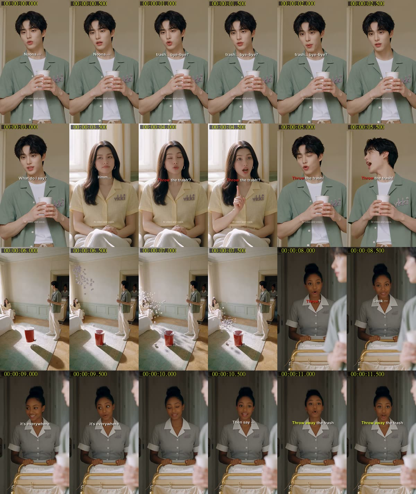
전체 흐름
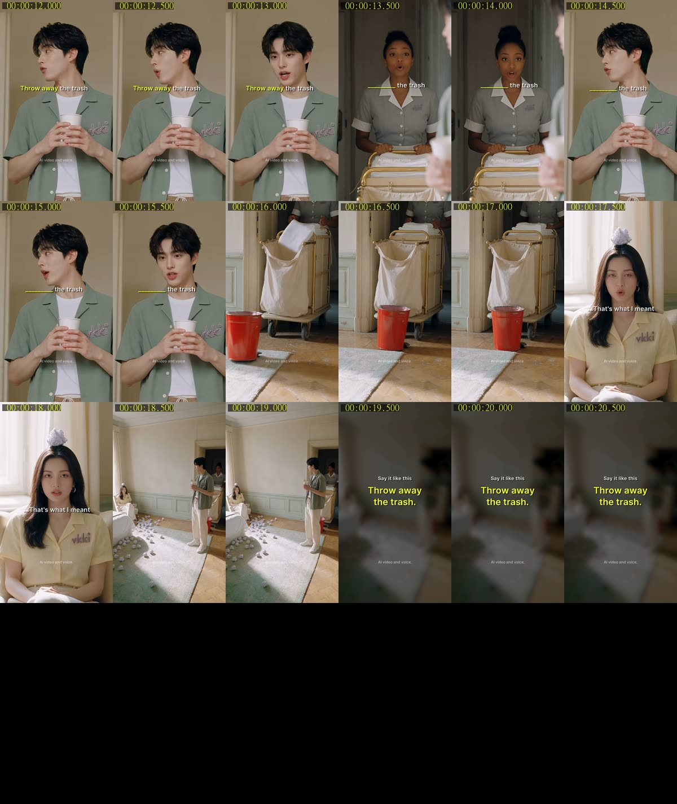